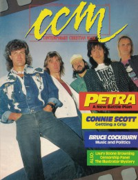

CMnexus
:
Contemporary Christian culture, music, and media.
Magazines
Profiles
Dove Awards
cmnexus.org
CM
nexus
→
Profiles
→
N
→
Brian Quincy Newcomb
Brian Quincy Newcomb
Writing Credits: 3 of 18
< -- Previous
Next -- >
1
2
3
4
5
6
7
8
9
10
Writing credits listing
Apr 1987 in
CCM
9.10
Aslan
-
Aslan
One Bad Pig
-
A Christian Banned
The Mission
-
Face the World
Body and Soul
-
Something's Going On Here / The Graylands
May 1987 in
CCM
9.11
"Model Citizen"
Phil Madeira
U2
-
The Joshua Tree
Terry Scott Taylor
-
A Briefing for the Ascent
The 77s
-
Seventy Sevens
Jun 1987 in
CCM
9.12
"Ready, Willing, and Able"
Margaret Becker
Phil Madeira
-
Citizen of Heaven
Jul 1987 in
CCM
10.1
"The Mad Genius of Terry Scott Taylor"
Terry Scott Taylor
,
Daniel Amos
"When Cultures Converge: Kiel Opera House, St. Louis, MO"
Stryper
Aug 1987 in
CCM
10.2
"No Longer Undercover"
Joey Taylor
,
Undercover
Mylon & Broken Heart
-
Crack the Sky
Crumbächer
-
Thunder Beach
L.S. Underground
-
Shaded Pain
September
-
Dreams and Lessons
Steve Keller
-
Stand Up
Wendy & Willy
-
Welcome the Light
Sep 1987 in
CCM
10.3
"Compassion All Star Debut at Cornerstone Festival"
Compassion All Star
Petra
-
This Means War!
Dave Perkins
-
The Innocence
The Awakening
-
Sanctified

Oct 1987 in
CCM
10.4
"Petra's Battle"
Petra
,
Bob Hartman
,
Jimmy Swaggart
Bruce Cockburn
-
Waiting for a Miracle: Singles 1970-1987
What If
-
What If
Nov 1987 in
CCM
10.5
DeGarmo and Key
-
D & K
The Altar Boys
-
Against the Grain
Randy Matthews
-
Streets of Mercy
Follower
-
Into The Sun
Solid Rock
-
Real To Reel
Dec 1987 in
CCM
10.6
"The Altar Boys Make A Human Sound"
The Altar Boys
Daniel Amos
-
Darn Floor-Big Bite
Crystal Lewis
-
Beyond the Charade
Win 1987 in
Harvest Rock Syndicate
2.4
"Still Waiting"
Bruce Cockburn
Bruce Springsteen
-
Tunnel of Love
Sting
-
...Nothing Like the Sun
John Mellencamp
-
The Lonesome Jubilee
various artists -
A Very Special Christmas
Bourgeois Tagg
-
YoYo
R.E.M.
-
Document
Robbie Robertson
-
Robbie Robertson
Steve Taylor
-
I Predict 1990
"The Very Best of Early Christian Rock"
best of list covering up to 1980, reviews each item
Jan 1988 in
CCM
10.7
Russ Taff
-
Russ Taff
The Allies
-
Shoulder to Shoulder
The Lead
-
Automoloch
,
The Past Behind
Kidd Proco
-
The Band
Feb 1988 in
CCM
10.8
"The Meaning of Life"
Bryan Duncan
Tonio K.
-
Notes from the Lost Civilization
Writing Credits: 3 of 18
< -- Previous
Next -- >
1
2
3
4
5
6
7
8
9
10
CMnexus
(noun)
The magazine index
of modern music
and Christianity
© 2011 CMnexus. Last updated April 2021.
Contact:
Rants and other correspondence to:
editor -AT- cmnexus
-DØT- org
About